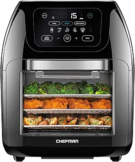
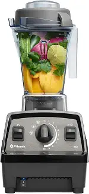
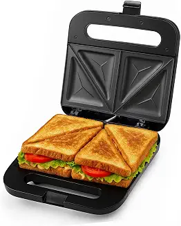
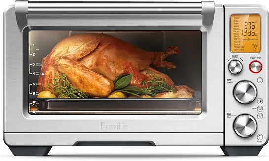

No amount of targeting fixes a failing hero. Vizit scores every destination before your media runs.
Every network lets you refine targeting, bidding, and placement. None tells you whether the page you're sending traffic to will convert. A low-scoring hero loses the click you paid for; a low-scoring PDP loses the shopper after it.




Vizit scores every destination PDP before the campaign runs. Ad dollars only flow to pages that are Vizit Certified; the rest get fixed first.
Better images earn more clicks at the same bid and convert more of them. The gain compounds across every campaign.
Certified heroes earn a higher CTR at the same bid, which improves relevance and lowers effective CPC.
Once you've earned the click, a higher-scoring PDP carries it through to purchase.
Lower CPC and higher conversion compound across search, display, video, and off-site media.
Fix the two assets every ad depends on: the hero that earns the click and the carousel that earns the sale.